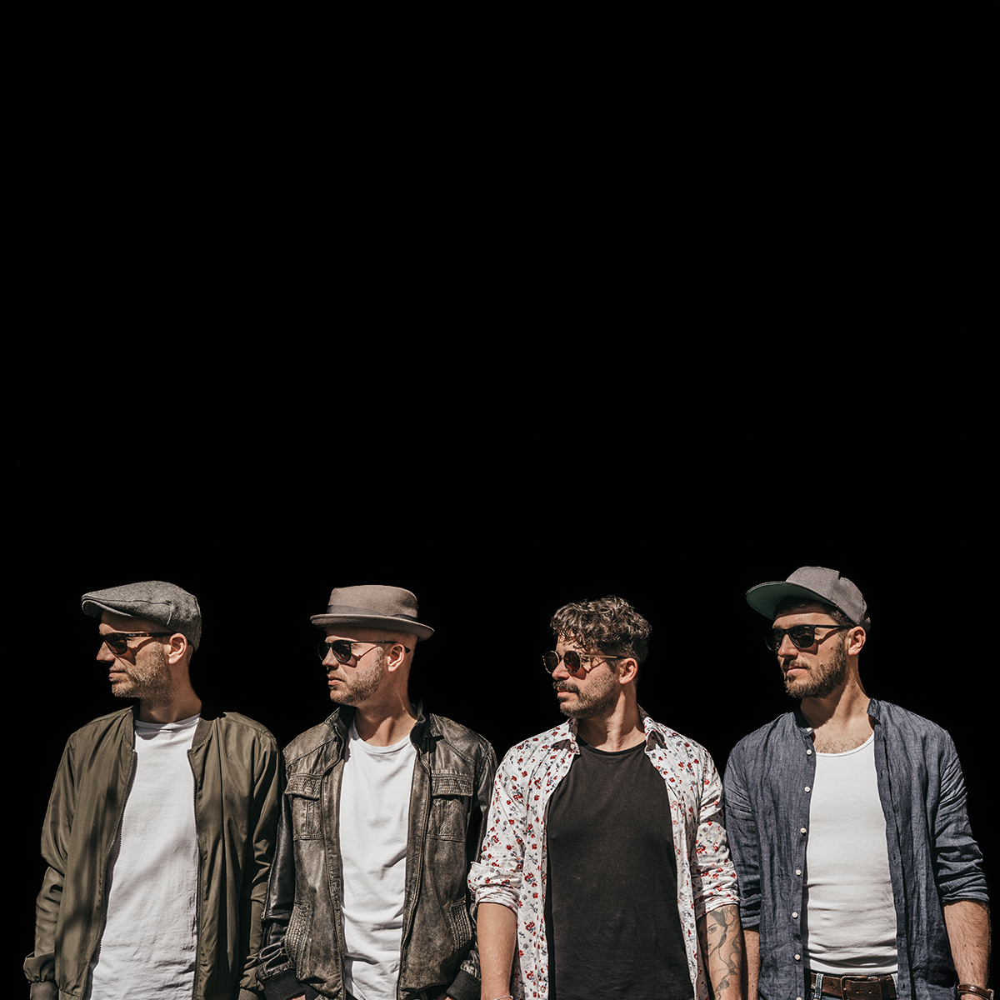
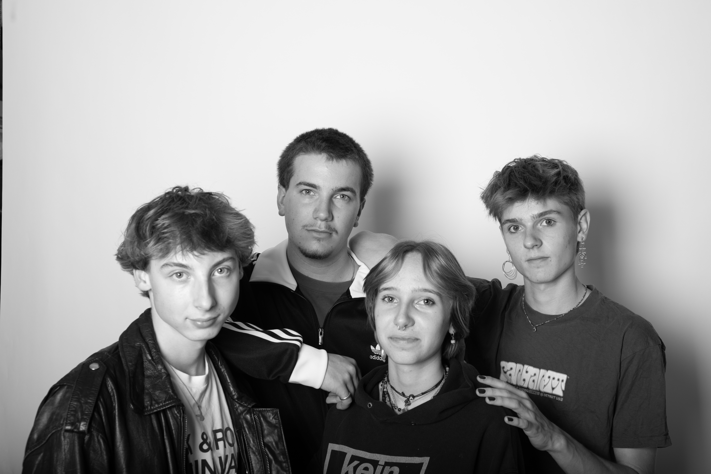
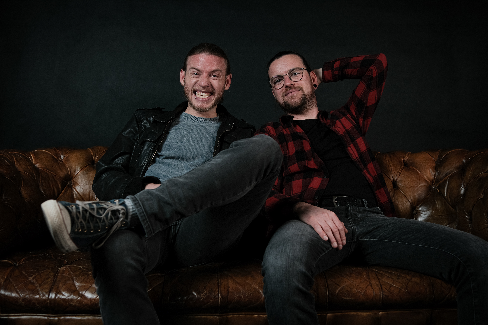
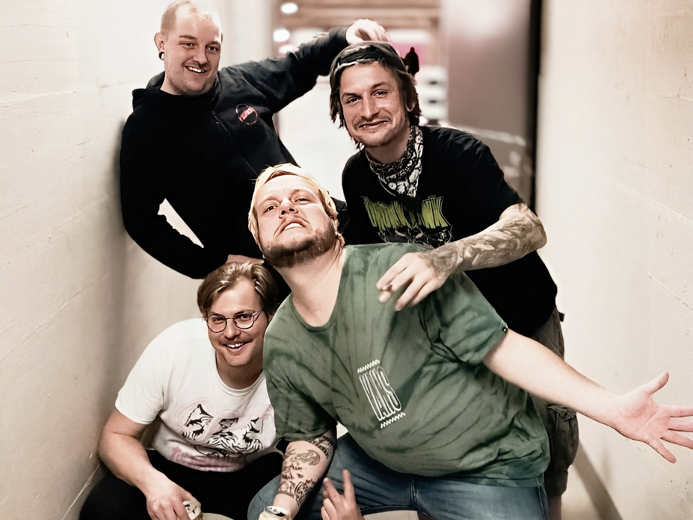
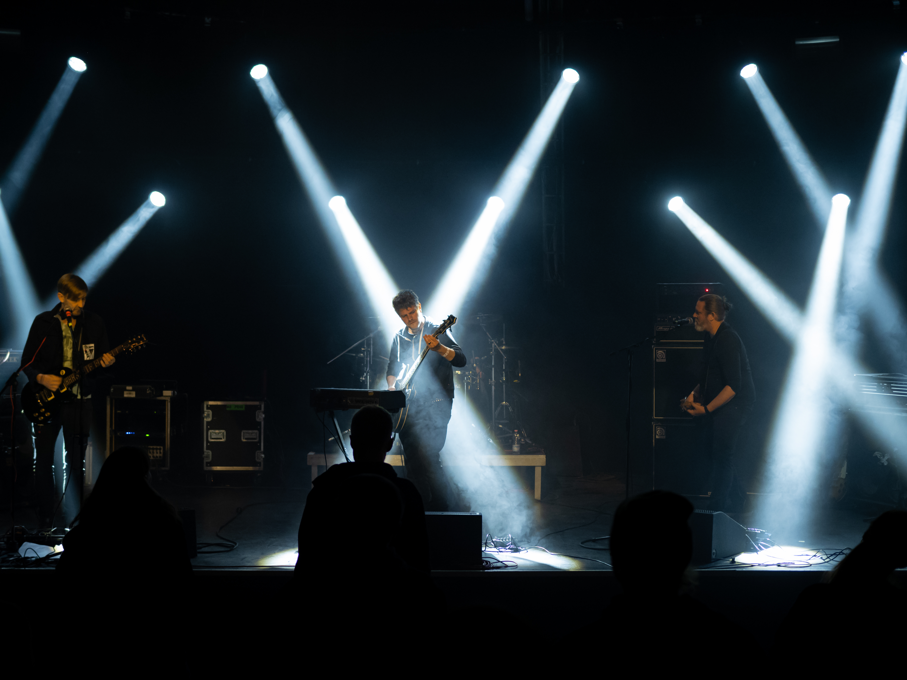
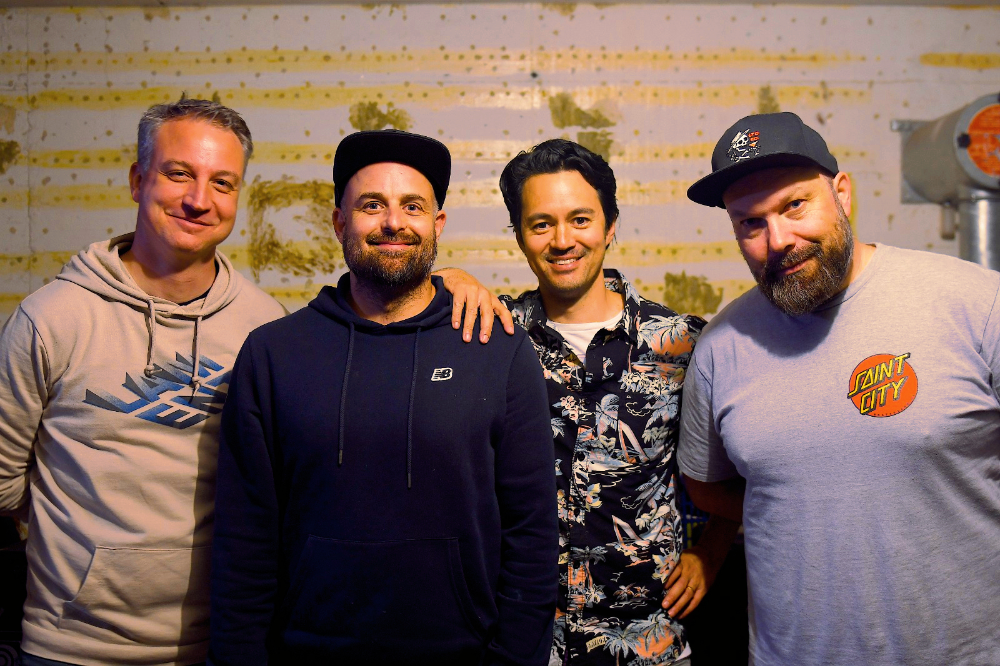
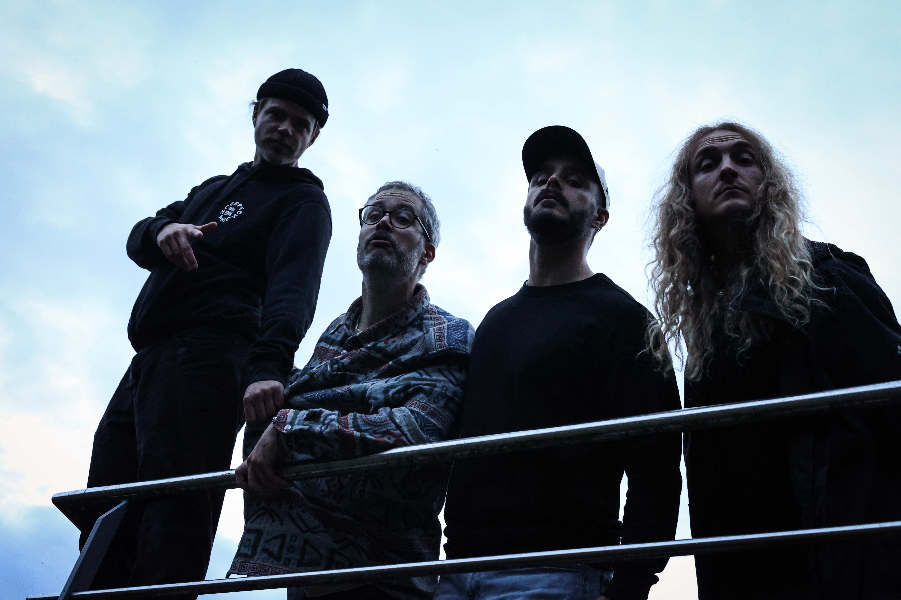

Lineup
Freitag
The Shedebies

“The Shedebies” leben für den Funk und zelebrieren diesen in all ihren Songs. Die Band versteht es, verschiedene Stile zu kombinieren und daraus eine eigene Funk-Welt zu schaffen. Sie setzen auf Vielseitigkeit und Improvisation. So hat jedes Konzert seinen eigenen Groove. Mit ihren Uptempo-Nummern bringen sie jeden Club zum feiern und sorgen für eine unvergessliche LIVE FUNK PARTY. "The Shedebies" ist ein absolutes Muss für alle Fans von Funk, Jazz und guten Live-Konzerten. Die vier talentierten Musiker Patrick Blättler an der Gitarre, Daniel Geiser an den Keys, Roger Semlitsch am Bass und Michael Schaffner an den Drums spielen seit über 15 Jahren zusammen. Patrick Blättler ist Vollblutmusiker und verfügt über jahrelange Erfahrung als Livemusiker. Er war Gitarrist in der Band Mothership Caldonia und in verschiedenen Jazzformationen. Daniel Geiser ist ebenfalls ein leidenschaftlicher Berufsmusiker. Er wirkt regelmäßig in Musicalproduktionen mit und ist Bandleader des Daniel Geiser Hammond Trios, das sich dem charakteristischen Sound der Hammond-Orgel verschrieben hat. Michael Schaffner war gemeinsam mit seinem Bruder Gründer der Funkband “Loufonq”. Roger Semlitsch war Gründer und Bandleader der Funkcombo Sulco. Er ist 2006 zur Band “Loufonq” gestoßen. Im Laufe der Jahre haben sich die vier Musiker einen Namen als gut eingespielte Rhythmusgruppe gemacht. Sie spielten bereits als Rhythmusgruppe in verschiedenen Bands und arbeiteten mit bekannten Künstlern wie Eric Krasno, Seven, Sam Kininger, Dave Feusi und vielen anderen zusammen, tourten durch Europa und spielten in zahlreichen Clubs und auf Festivals. Nun sind sie mit “The Shedebies” zum ersten mal mit einem eigenen Projekt und Programm unterwegs. Die ersten Songs “Schcofi” und “Birthday Bash” wurden im bandeigenen Übungsraum aufgenommen und in den USA von Alan Evans (Soulive), mit dem sie bereits früher zusammengearbeitet haben, produziert. Weitere Tracks wurden in einem Studio in Deutschland aufgenommen und von Josh Blake produziert (Marcus King, The Motet, Lettuce).
Beginn: TBA
Genre: Funk
Herkunft: Aargau
Lord Lawrence & the Lard Guitar

Seit ihrer Gründung im Jahr 2023 entführen die vier enthusiastischen Musiker das Publikum in eine Welt, in der D-Standard-Gitarren und harte Drum-Beats direkt zum Headbangen einladen. Die Band fühlt sich im Stoner Rock zu Hause, auch wenn in ihren Songs Einflüsse aus anderen Musikgenres durchklingen. Die packenden Melodien werden garantiert auch nach dem Konzert noch in euren Ohren nachhallen. Freut euch auf ein spannendes, abwechslungsreiches Konzert, das ihr so schnell nicht vergessen werdet!
Beginn: TBA
Genre: Stoner Rock
Herkunft: Düdingen
The Minx

Tauche ein in die rebellische Klangwelt von The MinX: Beeinflusst von Danko Jones und Jet verbinden sie mitreissenden Alternative Rock mit rotzigem Punk und schaffen so einen Sound, der aufbricht, aufrüttelt und sofort in die Beine geht. Getreu ihrem Motto «Don’t Follow the Mainstream» liefert die Band Songs voller Energie, Aufbruchsstimmung und unbändiger Spielfreude – Musik, die Freiheit atmet und das Publikum automatisch in Bewegung setzt. Wenn The MinX lospowern, liegt der Geschmack von Unabhängigkeit in der Luft – roh, direkt und absolut unverkennbar. Ein Meilenstein ihrer Bandgeschichte war das Debütalbum “Push it!”, das die Schweizer Album-Charts im Sturm eroberte und direkt auf Platz 10 einstieg. Doch diese fünf wilden Seeländer haben längst noch nicht genug: Sie sind weiterhin auf Mission, Bühnen im In- und Ausland und die Herzen ihrer Fans mit voller Wucht zu erobern. 2026 feiern The MinX ihr 20-jähriges Jubiläum – zwei Jahrzehnte Leidenschaft, Schweiss, Rock’n’Roll und unzählige unvergessliche Live-Momente. Und eines ist klar: Diese Geschichte ist noch lange nicht zu Ende.
Beginn: TBA
Genre: Alternative Rock
Herkunft: Berner Seeland
Linkin Roach
Linkin Roach (LA) – vier Legenden spielen Hymnen einer Generation. Rock 2000: Hits von Linkin Park, Papa Roach, Green Day, Foo Fighters und vielen mehr. Die Entstehung: Im Jahre 2023, inmitten der pulsierenden Musikszene von Los Angeles, fanden sich vier der einflussreichsten Musiker der Rockgeschichte zusammen, um eine Band zu gründen, die die Grenzen des Genres sprengen sollte. Die Chemie zwischen den Mitgliedern war sofort spürbar, und sie beschlossen, ihre individuellen Stile zu kombinieren, um etwas Einzigartiges zu schaffen. Die Musik: LINKIN ROACH vereint verschiedene musikalische Einflüsse: Travis Tek Barker bringt seinen explosiven Punkt-Rock-Style ein, während Billie Syn Armstrong mit eingängigen Melodien brilliert. Kurt Basil Cobain, der mit Gitarre und rauer Stimme überzeugt. Shavo Teo Odadjian rundet das Ganze mit seinen fetten Basslinien ab. Schlusswort: In einer Welt, die oft von Konformität geprägt ist, steht LINKIN ROACH für das Gegenteil: für Freiheit, Kreativität und den unaufhörlichen Drang, die Welt durch Musik zu verändern. Die Geschichte dieser Band hat gerade erst begonnen, und die besten Kapitel stehen noch bevor.
Beginn: TBA
Genre: 2000s Rock & Metal Hit Covers
Herkunft: Bern
Samstag
Televisionmind

Wenn alles gut geht, wird der Name Televisionmind bald einem grossen Publikum bekannt sein. Die Berner Band ist eine der spannendsten Neuentdeckungen der Szene. Kennt ihr diesen Geruch, wenn der Keller schwitzt, die Verstärker keuchen und die ganze Band vielleicht nur zwei Akkorde von der spontanen Selbstentzündung entfernt ist? Das ist Televisionmind. Kein künstlicher Teenie-Bullshit, sondern eine echte Teenager-Band mit Adern voller jugendlicher Unruhe und genau der richtigen Dosis Wahnsinn, um gefährlich zu sein. Sie sind nicht hier, um bloss eine Hommage abzuliefern oder sich im Flanellhemd der Eltern zu verkleiden. Sie sind hier, um das Wohnzimmer abzufackeln – mitsamt eurer Stereoanlage darin. 2022 in Bern von Jeremy Vane (Drums) und Elia Romero (Gitarre/Vocals) gegründet und durch Lena Willen am Bass sowie Jonas Jacob an der Gitarre komplettiert, rennt Televisionmind keinen Trends hinterher – sie setzen sie. Ihr Sound? Stellt euch kantige Gitarren, raue Vocals und Drums vor, die nicht nur den Takt angeben, sondern EUCH in die Knie zwingen! Wilde Post-Punk-Hymnen... langsame Indie-Balladen, die eher schmerzen als betteln... und die absolute Weigerung, auf Nummer sicher zu gehen. Seit April 2023 bringen sie die Bühnen vom Café Bar Mokka bis zur Reithalle in Bern zum Brennen. Sie sind auf der Überholspur. Keine überproduzierten Pop-Hooks. Kein aufgesetztes Lächeln. Keine Möchtegern-Dance-Moves. Und wenn ihre Musik auf eurem Handy auftaucht, dann nur, weil sie sich erbarmungslos durch den Lärm und die Algorithmen gekämpft haben. Ihre Debüt-EP «Answers Are Skin Deep» erscheint Anfang 2026. Sie ist ein Leuchtsignal in der Dunkelheit... ein Schrei aus dem Keller... ein Spiegel für jede Lüge, die ihr geschluckt und als Wahrheit akzeptiert habt. Das ist keine Musik für die Charts. Sie ist für die Zerbrochenen, die Rastlosen, die Kids, die immer noch daran glauben, dass Lärm sie retten kann. Es ist kein normales Release. Es ist eine Abrechnung. Erlebt sie jetzt... solange sie noch nach Kellerschweiss und Teenager-Träumen riechen.
Beginn: TBA
Genre: Alternative Rock/Grunge
Herkunft: Bern
Vagante

Mundartrock in schönstem Berndeutsch vorgetragen, gemischt mit einer nötigen Dosis Punk und abgerundet mit skurril-sarkastischen, manchmal ernsthaften Texten über das Alltägliche und die Absurdität unserer Zeit. Das ist Vagante aus Belp. Die Band hat viel erlebt in ihrem 5-jährigen bestehen, so haben sie innerhalb von fünfundvierzig gespielten Konzerten, bereits die Punk-Kult-Band Dritte Wahl im ausverkauften Dachstock Bern supportet, waren in der Kulturhalle Sägegasse Burgdorf und Mokka Thun zu Gegen und spielten an Festivals wie dem Openair Deisswil, Blaues Pferd Festival, Than Rock oder dem Mad Muni Festival. Mit drei EPs, einem stetigen Nachschub an Ideen und präzisen sowie unterhaltsamen Liveshows, steigert sich die Präsenz der Band hierzulande stetig
Beginn: TBA
Genre: Mundart Punk Rock
Herkunft: Belp
Fievel

Wer braucht schon dreiminütige Gitarrensolos oder epische Intro-Schleifen? Fievel reduzieren Punkrock auf das absolute Maximum an Energie! Das Rezept der Schweizer Combo ist so simpel wie genial und lässt sich mit ihrem eigenen Slogan perfekt zusammenfassen: «Meistens viel zu schnell, mit Songs, die meistens viel zu kurz sind.» Macht euch auf ein Set gefasst, das keine Gefangenen macht und euch keine Zeit zum Durchatmen lässt. Hier gibt es schnörkellose Riffs, treibende Beats und puren Punkrock direkt ins Gesicht. Wenn ihr blinzelt, habt ihr vielleicht schon den halben Song verpasst – aber genau das macht die Shows von Fievel zu einem wilden, intensiven Erlebnis. Schnürt die Schuhe fest, rein in den Moshpit und festhalten!
Beginn: TBA
Genre: Punk Rock
Herkunft: Bern
Flieger

An einem grauen Herbsttag vor langer, langer Zeit gründeten vier bleiche Buben im fernen Oberdiessbach eine Band, um dem Stromgitarrengetöse ihrer Idole nachzueifern. Sonicdesertpostdoomrock sollte es sein. Kick auf die Eins, drei, vier Akkorde und nicht perfekt gestimmte Gitarren. Daran hat sich bis heute nicht viel verändert, ausser zwei Eheschliessungen, drei Kinder, fünf Ūbungslokale und 30 Jahre Bandgeschichte. Seit 1995 rocken die mittlerweile angegrauten Herren in unveränderter Besetzung die Stadien und Clubs dieser Welt. Zürich, Basel, Biel, Thun, Bern, Biel, Luzern, Düdingen oder hin und wieder mal in Biel. Ein Hoch auf die Stromgitarren, das Alter und die Jugend. Das sind 30 Jahre FLIEGER - the sonicdesertpostdoombluesrock company since 1995.
Beginn: TBA
Genre: Desert Blues Rock
Herkunft: Oberdiessbach
The Masked Animals

The Masked Animals sind eine gereifte Punkrockband aus St.Gallen, Schweiz. Gegründet 1996, bis 2006 fast durchgehend live unterwegs, seit 2023 wieder auf der Bühne und ab 2025 mit neuem Schlagzeuger. Gespielt wurde viel – in Badezimmern vor einer Handvoll Verwandten und auf überdimensionierten Festivalbühnen. Touren führten durch die Schweiz und Westeuropa, zweimal in die USA und 2005 nach Japan. Dazwischen gab’s Compilations, Skateboard-Filme, kalte Spaghetti im Glas, Nächte im Bandvan und auf Fussböden. Zum 25-jährigen Jubiläum des Debüts «Seize The World» (1998) erschien «25th Anniversary / Greatest Hits» auf Vinyl bei Monster Zero Records: 12 Songs aus vier Studioalben, zwei rohe Live-Aufnahmen der Japan-Tour 2005 und ein bisher unveröffentlichter Song. Neu gemastert von Chris Fogal (The Gamits; Black in Bluhm Studios, Denver/Lugano). Age but don’t get old. Studiotermine 2025 sind gebucht. Dankbar hoch 1’000 für alles, was war! Und für alles, was noch kommen mag.
Beginn: TBA
Genre: Punk Rock
Herkunft: St. Gallen
Sir Donkeys Revenge

Mundart Rap x Stoner Rock Seit ihrer Gründung im Jahr 2014 haben sich Sir Donkey’s Revenge mit ihrem Dark Mountain Crossover einen festen Platz in der Schweizer Underground-Szene erspielt. Ihr Sound verbindet groovige Drums, druckvolle Stoner-Riffs und kompromisslosen Rap. Inspiration ziehen sie von Bands wie Rage Against the Machine, All Them Witches oder Black Sabbath – und formen daraus etwas radikal Eigenes. Mit ihrem neuen Album „BEYSWIND“ setzen sie ein klares Statement: Zum ersten Mal komplett in Schweizer Mundart geschrieben, kombiniert das Werk harte Raps mit psychedelischen Klangwelten, drückenden Rock-Passagen und erstmalig melancholischen Balladen. Das Markenzeichen der Band: Explosive, rohe und unberechenbare Live-Shows, die Energie und Wucht auf die Bühne bringen. Ihre Musik ist düster, hart und gleichzeitig sphärisch – geprägt von unkonventionellen Arrangements und verspielten Elementen, die dem Sound eine unverwechselbare Tiefe geben.
Beginn: TBA
Genre: Crossover Rock
Herkunft: Obwalden